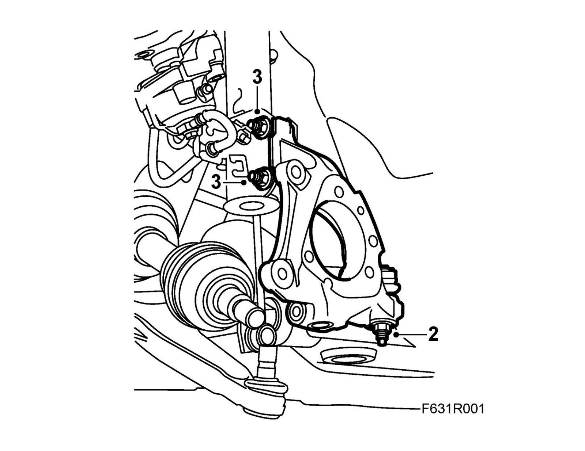
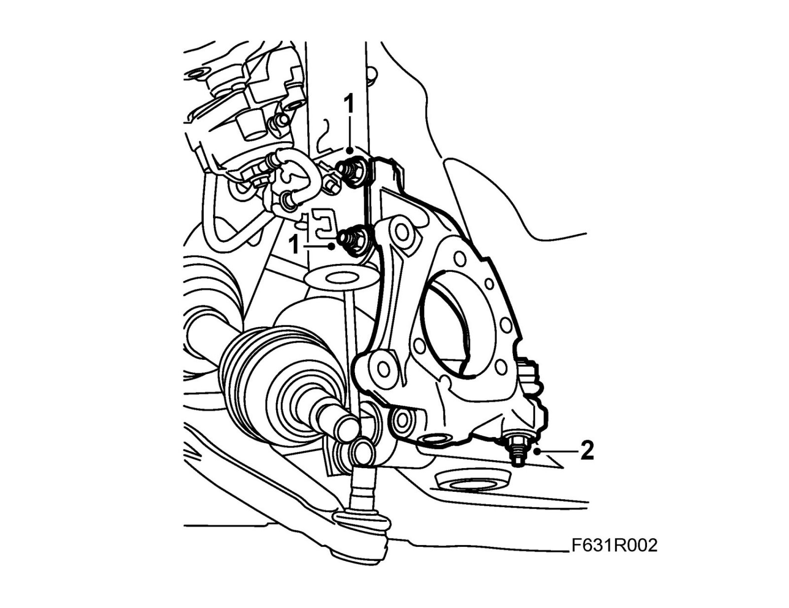

Front Steering Knuckle: Service and Repair
Steering swivel memberTo remove
1. Remove the wheel hub.
2. Remove the track rod end from the steering swivel member.

3. Remove the steering swivel member from the MacPherson strut. Hold the bolt with a wrench so that the bolt does not rotate.
To fit
1. Fit the steering swivel member to the MacPherson strut. Hold the bolt with a wrench so that the bolt does not rotate.
Tightening torque 80 Nm +135° (59 lbf ft +135°)

2. Fit the track rod end to the steering swivel member.
Tightening torque 35 Nm (26 lbf ft)
3. Fit the wheel hub.